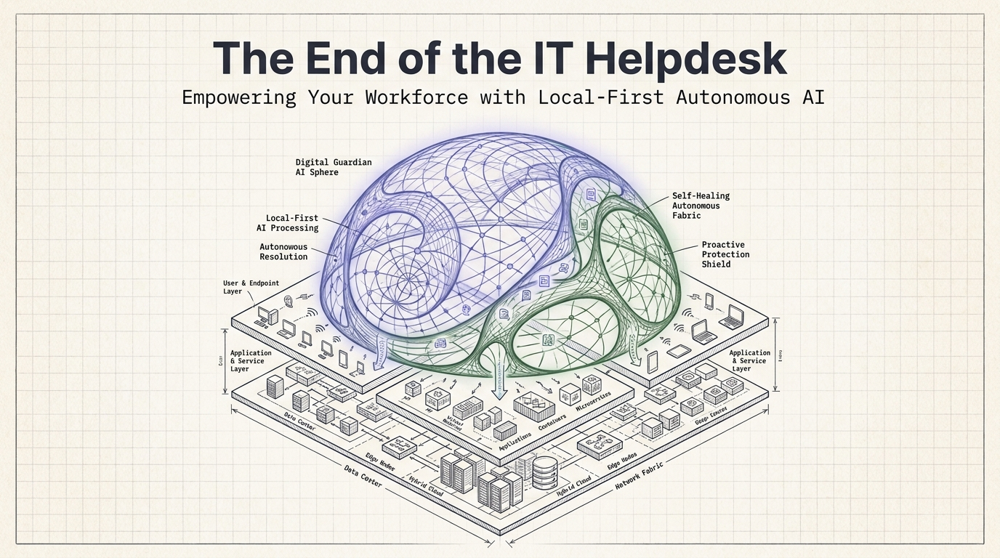
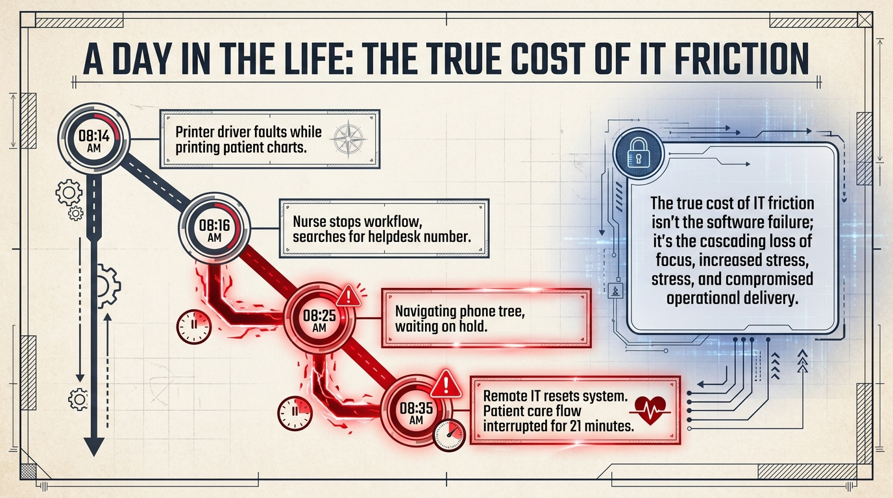

Voor bedrijven
Het einde van de IT-helpdesk.
Versterk uw personeel met lokaal-eerst autonome AI. Ouroboros is de metgezel voor het besturingssysteem die gebruikers, eindpunten, applicaties en services beschermt voordat frictie een ticket wordt.
- 90% van Niveau 1 en 2 problemen
- Lokaal-eerst AI-verwerking
- Autonome oplossing

Een dag uit het leven
De echte kosten van IT-frictie is de cascade.
Een printerfout is niet zomaar een printerfout. Het doorbreekt de focus, verhoogt de stress en onderbreekt de operationele levering.

Ouroboros AI
Klaar om te zien waar tijd weglekt?
Begin bij de frictie die uw medewerkers elke week al voelen.